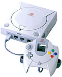

| 3. About... |
DC-TOOL GUI created by [big_fury]SiZiOUS. Original DC-TOOL by Andrew Kieschnick. French help written by [big_fury]SiZiOUS.
All the marks quoted are deposited by their respective owners.
The version of DC-TOOL GUI v1.2 becomes the v2.0. It has too much changes for a simple minor version.
Another nice proggy for your favorite Dreamcast :)
Real Bêta test :
JMD, dcprogfr,
speud
Greetings :
[DCReload.fr.st]
:
JMD, L@
Cible, dcprogfr, Erwan,
Diwee, Oggy,
Pingouindream,
Christluu, patbier,
Poche, telliam, olivier,
Cédric, speud,
Deadly-Skies et
tous ceux que j'ai oublié, la aussi... comme SiZiOUS (euh non c'est moi
ca :-)
[DCEmulation.com]
:
Thanks for the DC Devver Status ! BlackAura, quzar, Rand Linden, Segata Sanshiro,
ShadowofBob, Mikey242, qatmix, greay, impetus, az_bont, The Kron, Porto, Fackue,
Ian Michael...
[Phidels.com]
:
Michel, JROD, Vector, Sephiroth Lune, ReMix, DevelOpeR13, Shai, DooMeeR, tourlourou,
Shon, firejocker, jobe, ZeuS-[SFX], elran, Kitsune, SindromX, etc... Et tous
ceux que j'ai oublié, pardonnez moi ! :)
[DelphiFR.com]
:
Delphiprog, Nix, Bestiol... tout le monde de DelphiFR.
All Dreamcast sites, like DCEmu.co.uk, Dreamcast-Scene.com, Consolevision.com... and DC-FRANCE.com...
My family : DENPER, Codex, H...
My friends : Mokujin, Iceman, PsykoDin, blaster_du_94, Bobo.ELB, Fozinda, Tony, Xander94...
Special thanks to Rabusier, Broadc4st, Lepagand, Metalman... Les contacts MSN ;)
A big thanks to JMD who m'a helped well in this project.
Anyway, SORRY if you aren't here.
I thank Maxime Collomb, the author of the DosCommand component. I thank all authors for the components that I used, even if I don't know their name, as for XPMenu, DelphiX...
Thanks you for using my program.
Logo by :
[big_fury]SiZiOUS
Dreamcast Image :
Gaming Redients
Music (about box) :
Creator: Fabian Del Priore.
Format : XM (FastTracker v2.00)
Title : .a dASH fOR fREEDOM.
Notes : C64 RULEZ!
www : http://www.hartle-klug.com/Operator/
e-mail : fpriore@vme.de
Greetz : dane, }{tra, the bat, Deathmage, Nitemare, Eternity, Ferret, RaZor,
LaPe.
And Remember :
Dreamcast is NOT dead, still alive and kickin'

Zero Down lover... 3 doors down lover... Rage against the Machine lover... Lostprophets lover... ACDC lover... Bad religion lover... Blink182 lover... Deftones lover... Children of Bodom lover... Finch lover... Led Zepplin lover... Montrose lover... Metallica lover... Papa Roach lover... RANCID POWER!... Red Hot Chili peppers lover... System of a Down lover... ROCKS LOVER!!!